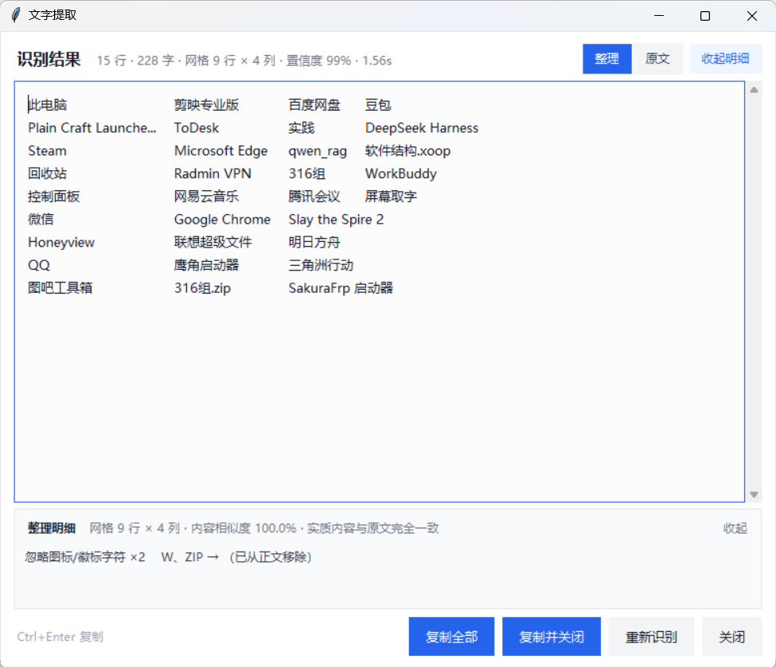
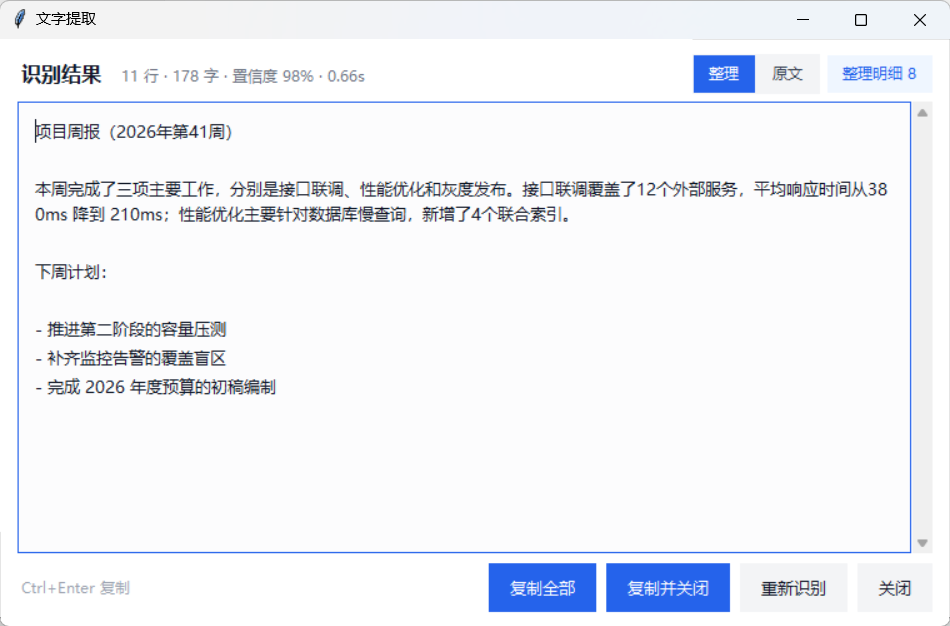
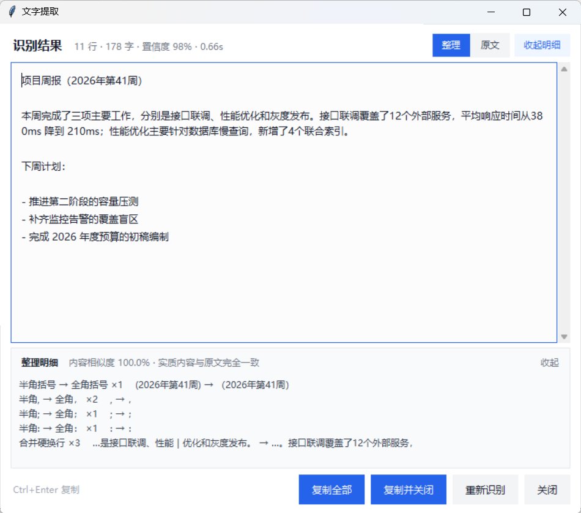

NineOne Spirits（九一的酒）· 屏幕取字：技术方案与实现说明
在任意软件窗口、网页或 PDF 阅读器上，用一个全局热键框选屏幕任意区域，本地识别中英文混排文字， 结果可编辑、可一键复制，并保留标题层级、缩进、段间距与表格列对齐等基本格式。
结论摘要
- 形态：独立常驻小软件（不是浏览器插件）。插件只能覆盖网页，而需求是「任意软件界面」，只有系统级全局热键 + 桌面级抓屏才能满足。
- 识别：本地 RapidOCR（PP-OCRv6）——中文混排精度接近云端 API，但不外传截图、无网络依赖、无需 GPU；实测一段中英混排界面截图平均置信度 99.2%。
- 体验：热键按下到遮罩可交互 < 100 ms（其中抓屏 13–19 ms），OCR 约 0.4 s 出结果；识别结果按原始版面还原（缩进 / 空行 / 制表符对齐），可编辑、可一键复制。
- 整理：识别完成后自动跑一遍文本整理（约 10 ms）——合并被窗口截断的硬换行、统一中英文标点、清掉汉字之间的噪声空格、按标题/列表重新分块。每类改动都留痕，一键可切回逐行原文，并用内容骨架校验保证没增删实质内容。
- 复杂版面：先判结构再拼字——桌面图标网格、参数表、分栏正文分别按网格/表格/整栏阅读顺序还原，「正文 + 表格」混排的页面也不会互相切碎；多字号页面按字号分层，标题不再被吸进正文。结构判定约 9 ms。
- 关键取舍：为精度放弃了「无谓放大」，为隐私放弃了「云端大模型」，为稳定性放弃了「DLL 注入 / UI Automation 直取文本」。
01产品形态决策：为什么不做浏览器插件
需求里最关键的一句是「能在任意软件界面和网页中随时调用」。这一句直接排除了浏览器插件： 插件的运行边界是浏览器渲染进程，无法覆盖微信、Excel、钉钉、PDF 阅读器、远程桌面，也无法截取系统弹窗。 因此候选形态只剩「系统级常驻程序」。
| 方案 | 覆盖范围 | 中文混排精度 | 实现/维护成本 | 结论 |
|---|---|---|---|---|
| 浏览器插件 | 仅网页 DOM / 渲染区域 | 中（多为云端接口或小型 wasm 模型） | 低，但要为 Chrome/Edge/Firefox 分别上架 | 排除 |
| 输入法 / 系统自带截图 OCR | 系统级，但交互固定 | 中 | 零 | 不可控 |
| DLL 注入 / UI Automation 直接读控件文本 | 理论最全 | 100%（拿到的是原文） | 极高，且被安全软件拦截、对 Electron / 画布渲染无效 | 排除 |
| 独立常驻程序 + 全局热键 + 桌面抓屏 | 任意前台窗口 | 高（本地 PP-OCRv6） | 低 | 采用 |
确定形态后，产品只剩三件事要解决：怎么被唤起、怎么拿到像素、怎么把像素变成排版良好的文字。后续章节即按此展开。
02整体架构与数据流
分层很薄：最上面是交互层（悬浮球、遮罩、结果窗），中间是编排层（状态机 + 线程队列）， 下面是能力层（抓屏、OCR、版面还原），最底是 Win32 适配层。能力层全部是纯函数或可替换实现，便于单测与换引擎。
一次识别的数据流是单向的，没有回环，也就没有状态同步问题：
# 单向数据流
热键/悬浮球 → 隐藏自身 → 抓整个虚拟桌面(PIL Image) → 逐屏建遮罩(1:1 像素)
→ 框选得到全局矩形 → 裁剪 → 预处理(反色/通道) → OCR → TextItem[]
→ 版面还原 → 字符串 → 结果窗(可编辑) → 剪贴板
03跨应用调用的实现方式
「跨应用」意味着我们的程序永远不是前台窗口，因此不能用常规的窗口消息或焦点模型，必须依赖系统级机制。逐项说明关键实现与踩过的坑。
3.1 全局热键：RegisterHotKey，而不是键盘钩子
# screengrab/hotkey.py user32.RegisterHotKey(None, hotkey_id, MOD_CONTROL | MOD_ALT | MOD_NOREPEAT, VK_Q)
- 注册在独立线程里跑自己的消息循环（
GetMessageW），命中后投递回调，不阻塞 UI 线程。 - 不用
SetWindowsHookEx低级键盘钩子：钩子是全局的，会被安全软件判定为键盘记录器行为，而且拖慢整机输入延迟。 MOD_NOREPEAT避免长按连续触发；注册失败（被其它软件占用）会记录并在启动时用 Toast 明确提示，而不是让用户以为程序没启动。- 限制：
RegisterHotKey要求组合里至少有一个Ctrl/Alt/Shift/Win，所以无法实现「单键唤起」——这是可接受的产品约束。
3.2 悬浮球：热键之外的第二个入口
无边框置顶窗口（overrideredirect + SWP_SHOWWINDOW），用 Canvas 画圆角胶囊；
按下与拖动都用 GetCursorPos 判断位移，>5px 视为拖动并持久化位置，否则视为点击。
它解决三个现实问题：热键被占用、用户记不住组合键、触屏/远程桌面下没有顺畅键盘。
3.3 抓屏：一次性抓整个虚拟桌面
ImageGrab.grab(all_screens=True) 抓的是「所有显示器拼成的虚拟桌面」，其左上角原点正是
SM_XVIRTUALSCREEN / SM_YVIRTUALSCREEN。因此后续所有坐标换算只有一次平移，不存在逐屏拼接的接缝问题。
抓屏前必须隐藏自己：先把悬浮球与结果窗 withdraw()，等一帧再抓，否则自己的窗口会被拍进底图，出现在遮罩里非常突兀。
3.4 高 DPI：所有坐标错误的根源
务必在创建任何窗口之前调用
SetProcessDpiAwarenessContext(PER_MONITOR_AWARE_V2)。不做声明时，Windows 会对进程做位图拉伸：125% 缩放下框选坐标整体偏移 25%、截图发虚，识别率明显下降。
声明之后，Win32 坐标、PIL 抓屏像素、Tk 画布坐标三者统一为「物理像素」，可以 1:1 互相换算。
3.5 多显示器与负坐标
EnumDisplayMonitors枚举每块屏的物理矩形，每个屏建一个遮罩窗口，各铺本屏截图 1:1 渲染 —— 混合 DPI 下也不会出现某块屏被拉伸模糊。- Tk 的
geometry("+-1920+0")会把负值解释成「距右边缘的距离」，副屏在主屏左侧时窗口会跑到错误位置。因此摆放窗口统一走SetWindowPos(hwnd, HWND_TOPMOST, x, y, w, h, ...)。 - 拖拽跨越两块屏时，各屏只绘制「全局矩形与本屏的交集」，选区被自然裁剪。
3.6 坐标取值：GetCursorPos，而不是 Tk 的 event.x_root
overrideredirect + SetWindowPos 之后，Tk 内部记录的窗口位置可能与实际不一致，
导致 event.x_root 失真。所有指针坐标一律走 GetCursorPos() 取物理像素，Tk 事件只当触发器用。
3.7 其它两处细节
- 单实例：命名互斥体（
CreateMutexW("Global\TextGrabber.SingleInstance")），防止重复启动后两个进程争抢同一个热键，后启动者只弹提示后退出。 - 剪贴板：直接写
CF_UNICODETEXT，不依赖 Tk 的剪贴板所有权，程序退出后内容仍在。注意 64 位下HGLOBAL必须声明restype/argtypes，否则句柄被按 32 位截断，GlobalLock返回 NULL 直接访问违例（开发中真实踩到）。
04识别能力的选型依据
约束条件排序：中文+英文混排准确率 > 隐私（离线）> 响应速度 > 部署体积 > 可扩展性。按此评估五个候选：
| 候选引擎 | 中英混排 | 西文空格/标点 | 单张耗时 | 部署体积 | 离线 | 结论 |
|---|---|---|---|---|---|---|
| Windows.Media.Ocr | 中上 | 一般 | 极低（<50 ms） | 系统自带 | 是 | 备选 |
| Tesseract 5 | 中 | 差 | 低 | 小 | 是 | 排除 |
| PaddleOCR server | 高 | 好 | 高 | 数百 MB（Paddle 框架） | 是 | 可选 |
| 云端 OCR API | 很高 | 很好 | 网络 RTT | 0 | 否 | 排除 |
| RapidOCR 3.x / PP-OCRv6 small（ONNX） | 高 | 好 | 0.37–0.41 s | 80 MB | 是 | 采用 |
决定性证据：西文空格是否保留
同一张中英混排界面截图，在两个版本的 PP-OCR 模型下：
# PP-OCRv3 mobile（rapidocr-onnxruntime 1.2.3） Revenuegrew18.6%QoQdrivenbyoverseasexpansion. ← 空格与逗号全部丢失 # PP-OCRv6 small（rapidocr 3.10） Revenue grew 18.6% QoQ, driven by overseas expansion. ← 完整保留
「识别准确率」对这类工具不只是字对字，单词边界丢失等于结果不可用。这一条直接把旧版 mobile 模型排除，最终选定 PP-OCRv6 small。
为什么不用云端 API
截图里可能有聊天记录、客户名单、财务数据。把屏幕内容上传到第三方服务器，是这类工具最不该做的取舍； 同时云端还有配额、计费、断网不可用、响应抖动等问题。本地 0.4 s 已足够快，没有理由换隐私。
可插拔后端
OcrEngine 只定义一件事：run(np.ndarray) -> [(quad, text, score)]。
目前实现三个（RapidOcrEngine / LegacyRapidOcrEngine / PaddleOcrEngine），
按可用性自动降级。日后想换更高精度的 server 模型或接入其它引擎，上层 OcrService、版面还原、UI 全都不用改。
05准确率的五个保障手段
准确率不是「选个大模型」就完事。屏幕文本有一批特有陷阱，逐条给出机制与实测依据。
- 高 DPI 感知 必做 未声明 DPI 感知时，系统位图拉伸会让文字边缘发虚、坐标偏移，识别率与框选精度同时崩。见 3.4。
-
深色界面自动反色
PP-OCR 的识别模型按「浅底深字」训练。暗色主题（终端、VS Code、深色网页）上的浅色文字直接喂进去会明显掉点。
做法：取灰度中位数作为背景亮度代理，
< 110判定为深色并整体反色，把输入拉回训练分布。 实测深色界面平均置信度 98.6%，与浅色基本持平。 -
通道顺序 BGR
库的
ndarray入参按 OpenCV 习惯解释为 BGR。PIL 出来的是 RGB，必须先[:, :, ::-1]。传错不会报错，只会让彩色文字与细笔画的识别率悄悄下降 —— 属于典型的「静默精度损失」。 -
不做无谓缩放 实测结论
常见经验是「小字放大再识别更准」。但在 PP-OCRv6 上实测恰好相反：
所以默认 1:1 送入，只对超长边（>4000px 的极端选区）做等比缩略。少一次预处理，快且更准。原生 9–10px 小字 平均置信度 相对耗时 1.0× 原图 97.8% 1.0× 2.2× 放大 97.6% ≈1.0× 3.0× 放大 97.0% ≈1.0× -
置信度过滤 + 质量可见
低于 0.5 的框直接丢弃（多半是图标、分隔线、装饰性噪点）；同时统计
<0.85的框数量与整体平均置信度， 展示在结果窗标题栏（「13 行 · 284 字 · 置信度 99% · 0.51s」）。用户一眼能判断这次要不要重框，而不是盲目信任。
实测：一份中英混排产品报告截图
760 × 430 px，含标题、英文摘要、三级列表、4 列 3 行表格、脚注（含日期与邮箱）。
- 识别 12 行 / 284 字，平均置信度 99.2%，耗时 0.51 s；
- 金额
¥3,482万、百分比+21.4%、日期2026-09-30、邮箱ops@example.com全部逐字符正确； - 表格四列在输出中被还原为制表符分隔，粘贴进 Excel 可直接成列。
06版面还原算法
OCR 只给出一堆「四点框 + 文本 + 置信度」。直接按行拼接会丢掉缩进、段间距和表格列 —— 那只是「一堆字」，
不是「保留基本格式的文字」。因此单独做了一个纯函数模块 layout.py（无 IO、无 UI，可单测），四步：
- 行聚类：按垂直重叠率把框分到同一行，容忍轻微倾斜与同行字号不一致。
判据
overlap / min(h₁,h₂) ≥ 0.45；同组内按 x 排序。 - 行内拼接：间距决定分隔符，这是中英文差异的核心。
# 阈值同时参考字宽与行高，避免字号混排时误判 tab_gap = max(字宽 × 1.8, 行高 × 1.35) → 跨列，输出 \t space_gap = 字宽 × 0.45 → 输出一个空格 中文 ←→ 中文 → 不加空格（中文排版无词间空格）
- 段落切分：行距
> 1.35 × 行高视为段间距，输出空行； 「智能合段」模式下，行距≤ 0.55 × 行高且左边界差< 1.6 × 字宽的连续行合并为一段（中文直连、西文补空格）。 - 缩进还原：
round((x₀ − 块左边界) / 行内字宽)折算成前导空格（上限 8），保留列表缩进、 首行缩进的观感；含制表符的行（表格行）不做缩进，避免列错位。
效果对比（同一段 OCR 结果，两种输出模式）：
一、核心结论 1. 华东区域营收 ¥3,482 万元 2. 客单价提升至 ¥286 渠道 GMV 同比 天猫旗舰店 1,284.5 +21.4%
一、核心结论 1. 华东区域营收 ¥3,482 万元 2. 客单价提升至 ¥286，复购率 41.2%
两种模式在结果窗右上角一键切换，只重新拼版、不重跑 OCR，所以来回对比是零成本的。
6.4 显示层：只纵向滚动，永不横向溢出
结果窗的文本框用 wrap="word"。Tk 8.6 在这个模式下遇到超长无空格串（URL、base64、连续英文标识符）或连续中文时，会退化为按字符断行——实测 260 字符的 URL 折成 7 行、200 个连续汉字折成 10 行，都不产生横向溢出。所以结果窗不提供横向滚动条，任何长度的内容都能完整看到。
窗口尺寸与字号一起按系统 DPI 放大（winfo_fpixels("1i") / 96），布局断点用逻辑像素判断：≥620 显示完整质量摘要，≥600 显示快捷键提示，<480 时底栏四个按钮自动排成 2×2，避免被挤成一条细缝。这三个档位都有回归断言覆盖（tests/test_result_wrap.py：横向可视范围必须为 0~1、按钮不得被压缩或溢出窗口）。
07复杂版面：网格、分栏与多字号
「行聚类 + 行内拼接」隐含一个假设：整页是一栏连续文字。而实际框选对象里，桌面图标网格、 卡片列表、参数表、报表截图占了一大半——它们都不满足这个假设。这一章记录这类版面为什么读错、 影响范围有多大，以及现在的判定与还原方式。
7.1 症状：一张桌面图标截图，修复前后
同一张 593×1006 的桌面截图（4 列 × 9 行的图标网格，标签有中英文、有折行、字号一致）， 识别置信度 99%，但整理稿在修复前是这样的：
此电脑剪映专业版百度网盘 豆包 Plain Craft ToDesk 实践 DeepSeek Launche... Harness W Steam Microsoft qwen_rag 软件结构. Edge xoop 回收站 Radmin VPN 316组 WorkBuddy 控制面板网易云音乐腾讯会议屏幕取字
此电脑 剪映专业版 百度网盘 豆包 Plain Craft Launche... ToDesk 实践 DeepSeek Harness Steam Microsoft Edge qwen_rag 软件结构.xoop 回收站 Radmin VPN 316组 WorkBuddy 控制面板 网易云音乐 腾讯会议 屏幕取字 微信 Google Chrome Slay the Spire 2 Honeyview 联想超级文件 明日方舟 QQ 鹰角启动器 三角洲行动 图吧工具箱 316组.zip SakuraFrp 启动器
三类错误，每一类都能在几何上找到确定的原因，不是「模型认不准」：
| 症状 | 原文应读成 | 成因 |
|---|---|---|
此电脑剪映专业版百度网盘 | 四个独立单元格 | 行内「间距 → 分隔符」阈值在网格上摇摆（见 7.2 根因一） |
W 独占一段 | 属于「软件结构.docx」这个图标 | 图标 Logo 被识别成字母，且没有单元概念（见 7.4） |
Microsoft 与 Edge 分开、Honeyview 联想超级文件 粘连 | 前者是一个标签折行，后者是两个标签 | 缺少「单元」与「跨列框切分」（见 7.4） |
7.2 三个根因
-
根因一：行内间距阈值在网格上摇摆
第 1 行四个标签的字宽中位数 17.1px、行高 19.5px，于是tab_gap = max(17.1×1.8, 19.5×1.35) = 30.8px；而实测三个列间缝分别是 29 / 22 / 43px。29 和 22 小于阈值 → 直接相连，43 大于阈值 → 出一个制表符， 于是同一行里出现了两种判法。这不是阈值没调好：22~43px 正好落在「词间距」与「列间距」 之间，任何单一阈值都会在别处翻车。间距本身不携带「这里是列」的信息， 必须从整页的列结构反推。 -
根因二：全局列模型会切碎正文
一页上下结构不同时（上半段是条款、下半段是「姓名｜部门」表单），表格会向全页投出列边界， 正文行也被按这些边界切开，上下两行被并进同一个「单元格」，读出来是：第一条 为规范管理第二条 本办法适用于全体员工。影响范围不止表格页——凡「正文 + 表格」「标题 + 多列卡片」的截图都会中招，而且切碎的正文 看起来仍然通顺，用户很难一眼发现内容被串了。 -
根因三：没有字号层级
标题（32px）、小标题（20px）、正文（14px）、注释（10px）在文本层没有任何标记。 整理阶段只能按「字符数」判断该不该合并，于是标题被吸进正文第一行、注释被粘到段尾； 多字号混排的界面（设置页、报表、海报式落地页）几乎必然出错。
7.3 结构判定：列候选 → 逐行签名 → 区块
新增 structure.py（纯函数，9 ms/15 框），把「行」升维成「区块」：
- 列候选：收集各行内部
≥0.9 × 行高的空隙，按区间是否重叠聚类。 用区间重叠而不是中点距离：图标名居中排列、长短不一，同一条列间缝在不同行会漂移十几像素 （实测 83~98px），固定容差会把一条边界拆成两条，列数就多出一列。 - 逐行签名：每一行只认「落在自己空隙里」的列边界。正文行里边界通常落在某个框内部 （那句话横跨了表格列的投影位置），签名为空 → 这一行不会被切。表格行、图标行的空隙正好 套住边界 → 签名非空。这是根因二的解法。
- 区块：签名相同的连续行合成一条带；带两端各放宽 1.2 倍字高，把贴着网格的折行标签 （只有一行、天然没有列结构）吸进来。带内走网格/分栏，带外走单栏正文，区块之间按纵向 间距补空行。同一页可以同时存在「正文块 + 表格块」。
- 定性：单元格平均字数
≤22→ 网格（逐行输出、制表符对齐列）； 否则 → 分栏（整栏读完再换栏，报纸式阅读顺序）。另有一条自检：若某个单元横跨≥75%版心且合并了多行，说明列模型不成立（正文被切碎时的典型形态）， 整块退回单栏。
7.4 单元还原：折行、跨列、徽标
| 问题 | 判据 | 处理 |
|---|---|---|
| 标签折行 | 同一列内，相邻两框的纵向间距 ≤ 0.6 × 行高 |
并成一个单元，按「中文直连 / 西文补空格」接回：Microsoft + Edge →
Microsoft Edge；软件结构. + docx → 软件结构.docx |
| 紧密表格 （行距极小） |
纵向间距 ≤ 0.6 × 行高，但这一行占满了整块的列数 |
判为表格换行，不并单元。折行标签所在的行只占 2 列（全块常见 4 列），表格行则列列有框；
用「每行占几列」的众数区分两者，否则 姓名/张三、部门/研发
会被各并成一个单元，两行表格塌成 姓名张三 部门研发。
单字母徽标（W）不受这条约束，否则它会独占一行 |
| 跨列框 （OCR 吞并） |
框的 x 范围横跨列边界 | 按位置比例算切点，再就近吸附到空格（±18% 内），两侧都 ≥2 字才动手。
实测 Honeyview 联想超级文件 是一个 240px 宽的框，切成
Honeyview / 联想超级文件；而
316组.zip SakuraFrp 启 在最右边界会切出 1 个字的尾片，因此不切，
整段归它中心所在的列（保持 SakuraFrp 启动器 完整） |
| 图标徽标 | 单个 ASCII 字母数字；或 2~4 个大写字母且宽度 < 35% 单元宽 |
判为图标角标（Word 的 W、压缩包的 ZIP），从整理稿移除；
原文视图仍保留，明细里记一条「忽略图标/徽标字符 ×2：W、ZIP」 |
7.5 多字号：分层与隔离
框高 ≈ 字高，所以字号可以从几何上反推：把全页框高排序后按 18% 递增聚类 （同段正文波动 <5%，标题通常是正文的 1.4~2.4 倍，注释小一号），得到 2~4 层。 层级随后贯穿两处：
| 用途 | 判据 | 效果 |
|---|---|---|
| 标题识别 | 行高 ≥ 正文层 × 1.18 且整行 ≤60 字 |
标题前后各补一个空行，自成一段；一、为什么不用云端大模型 不会和正文第一行连成一句 |
| 跨层不合并 | 相邻两行的字号层相差 ≥1 层 | 正文段尾的注释（10px）不会被粘进正文；返回顶格的小标题也不会被上一段吞掉 |
| 层级播报 | 最大层 ≥ 最小层 × 1.3 才显示 |
标题栏出现「· 3 级字号」；识别框高本身有 10%~20% 波动，不加这条阈值会天天误报 |
字体家族、字重、颜色无法从 OCR 结果中得到——引擎只返回四点框、文本和置信度。 因此「同一字号下的粗体」与常规体在文本层不可区分，能还原的是相对字号层级与 对齐关系，不是字体样式本身。这是纯文本输出的固有限制，不是实现取舍。
7.6 呈现与实测


W、ZIP 两个图标角标移出正文——删了什么也写在明面上。
| 指标 | 结果 | 说明 |
|---|---|---|
| 结构判定 + 单元还原 | 9.0 ms | 15 个文本框，含 3 次列聚类与 2 处跨列切分 |
| 列位还原准确率 | 36 / 36 单元 | 9 行 × 4 列全部归位，含 2 处折行、1 处跨列框、2 个徽标 |
| 整理对正文的改动 | 0 处 | 相似度 100.0%，保真等级 ok |
| 回归用例 | 52 项断言 | test_structure.py（36）+ test_grid_e2e.py（16，真实截图） |
7.7 边界与代价
- 整行被吞成一个框：OCR 检测阶段把多个单元格连成一个框时，只能按比例 + 就近空格切； 纯中文没有空格可吸附，就不切——宁可整段留在首列，也不制造错字碎片。
- 合并单元格 / 跨行表头：没有表格结构模型，只按「列位」还原，不还原 colspan/rowspan。
- 列数上限 8：超过按前 8 列处理，更多列的密集表格会退化成「列位大致对齐」的文本。
- 行距极小的表格：表格行距小于半个字高时，几何上与「标签折行」无法区分， 只能靠「这一行是否占满列数」的统计规律判断。两列宽的密集表格如果每行都折行， 规律失灵，会把折行拆成新行。
- 分栏 vs 网格的判断：以单元格平均字数（22 字）为界。极短的分栏正文（如诗歌、对话） 会被当成网格逐行输出——两者在几何上确实无法区分，此时逐行反而更好读。
08文本整理：从「认出来」到「读得通」
版面还原之后拿到的是「屏幕上的行」：一段话被窗口宽度切成三四行，汉字之间夹着 OCR 噪声空格，
半角标点混在全角里，双引号是直引号。这些都不是识别错误，而是「没有整理」——直接复制出去，
还得手工删换行、补标点、改引号。所以链路末尾加了一步纯文本整理（tidy.py，
同样无 IO / 无 UI / 无网络），在结果窗打开之前完成。
这一步的边界
只动「形」，不动「意」：调字符形态、标点、空白、段落结构。除高置信纠错规则外不增、不删、不改写任何实质内容。 整理前后做一次内容骨架校验，每类改动写入 ChangeLog，界面上随时可查、可一键切回原文。
7.1 触发时机
识别完成即自动执行，不需要用户点任何按钮：
| 时机 | 行为 | 代价 |
|---|---|---|
| OCR 完成、结果窗弹出前 | 在 OCR 工作线程内串行执行，与识别结果同一批投回主线程，UI 不额外等待一次线程切换 | +9～12 ms |
| 重新识别 / 再次框选 | 对新结果重新整理 | 同上 |
| 切换「逐行 / 合段」 | 不重跑整理：整理吃的是逐行结果，与排版模式无关，只重算原文 | ≈ 0 ms |
| 整理过程抛异常 | 捕获后降级为直接展示原文，不阻塞主流程 | — |
| 用户关闭开关 | 悬浮球右键「自动整理识别结果」可关；关后只显示逐行原文，视图切换控件一并隐藏 | — |
之所以敢放在主链路里同步做，是因为它是纯字符串处理：实测 8000 字 ≈ 11 ms、2000 字 ≈ 4 ms，相对 OCR 的 380 ms 完全可以忽略。
7.2 六步流水线
| 步骤 | 做什么 | 关键判据与取舍 |
|---|---|---|
| 字符归一 | 全角 ０-９ Ａ-Ｚ ａ-ｚ ％＋＝ → 半角；清零宽字符、软连字符、BOM。 |
只转「本该是 ASCII」的码位。全角逗号、句号、括号本身就是中文标点，绝不能转。没有整段套 NFKC，正是因为它会把全角括号也一并转掉。 |
| 标点统一 | , ; : ! ? → ，；：！？；含中文的括号与直引号转全角；。。。 → ……；重复标点折叠。 |
行内汉字 ≥2 才算中文语境。数字之间的 , . : 与 :// 一律不动，所以 1,000、3.14、12:30、URL 全部原样保留。 |
| 空格清理 | 汉字之间、汉字与全角标点之间、括号内侧的空格删除；连续空格折叠为一个。 | 中英之间保留 1 个空格（使用 Python），这是正确的中英混排，不强行贴合。 |
| 断行重排 | 判断这一行的换行是「排版截断」还是「真的分段」，前者与下一行合并。 | 满行宽取非空行长度的 75 分位；上一行不足 72% 满行宽即判为段尾。详见 7.3。 |
| 段落重组 | 段落之间留一个空行；列表项之间用单换行保持紧凑；表格行逐行输出。 | 含制表符的行永远不参与合并——一旦合段，表格结构就彻底毁了。单段上限 1200 字，防止误判把整篇吞成一段。 |
| 保守纠错 | 重复虚词折叠（的的→的）；数字串里 O→0、l/I→1；24 条高置信错别字（己经→已经、帐号→账号 等）。 |
只收「有唯一正确写法」的搭配。形近字（未/末、己/已、土/士）与语法改写一律不做，理由见 7.4。 |
六步都是线性、保序的：不重排句子顺序，也不跨行搬移内容。「重组」指的是把被排版截断的同一段重新接起来、 把本该分开的段落分开——阅读顺序永远是原文从上到下的顺序。这一步也不做双栏还原（那是版面还原层的事）， 双栏页面建议按栏分别框选。
7.3 断行合并：整条链路里最容易出错的一步
合并的依据不能只看「行尾有没有标点」。PDF 和窄栏网页里，一行常常正好在逗号处被截断， 只看标点会把完整的一段切成五六段。真正可靠的信号是这一行有没有写满：
# 满行宽 = 非空、非表格行长度的 75 分位（被截断的行一定接近满行） full_width = percentile([len(l) for l in lines if l and "\t" not in l], 0.75) def should_break(prev, cur): if "\t" in prev or "\t" in cur: return True # 表格行永远独占 if LIST_RE.match(cur): return True # 列表 / 编号另起一段 if cur.indent > prev.indent: return True # 缩进加深 = 新段首行 if ends_sentence(prev): return True # 上一行已经收句 if len(prev) < full_width * 0.72: return True # 明显没写满 = 段尾 return False # 其余视为硬换行，接上
合并时的连接规则单独处理，避免把断行变成多余空格或粘连：
| 情形 | 连接符 | 例子 |
|---|---|---|
| 中文接中文 | 空 | 「…性能」＋「优化和灰度…」→「…性能优化和灰度…」 |
| 中文与英文 / 数字 | 1 个空格 | 「…覆盖了」＋「12 个服务」→「…覆盖了 12 个服务」 |
| 上一行以标点结尾 | 空 | 「…服务，」＋「平均响应…」→ 直接相接 |
| 英文行尾连字符断词 | 去掉 - | inter- ＋ national → international |
7.4 保守纠错：为什么不做形近字替换
「纠错」这个词很容易被做得过度。本实现划了一条明确的线：
- 重复虚词折叠：
的的、是是（叠用的虚词没有正常语义） - 数字串里的字母混淆：
2O26→2026（仅当前后都是数字） - 高置信错别字：
己经、因该、帐号——错的那个写法不存在第二种解释
- 形近字替换：
未/末、己/已、土/士——判错一次就是改错原文 - 同义润色、精简、补全主语：那是改写，不是整理
- 引入云端大模型：截图不出本机是产品前提，不能为润色破例
叠词也做了保护：看看、试试、慢慢、一一对应 都不会被折叠——折叠表只覆盖那些叠用后不成立的虚词。
7.5 保真校验与可追溯
「不改变实质内容」不能只靠承诺，得能验证。做法是把两侧都归一成一条内容骨架再比对：
def signature(text): """内容骨架：NFKC 归一 → 去掉全部空白与标点，只留实质字符""" s = unicodedata.normalize("NFKC", text) return "".join(ch for ch in s if not ch.isspace() and not is_punct(ch)) if signature(raw) == signature(tidied): fidelity = "ok" # 完全保真：只动了形，一个字都没增删改
用 NFKC 而不是原样比较，是因为全角数字经 NFKC 后与半角等价——这样「字符归一」不会被误判成内容变更，
只有真正的纠错才会让骨架出现差异。骨架不等时用 difflib 逐字比对，算出改动字数：
不超过 max(3 字, 2%) 记为 minor（属纠错规则所致），超出则记 warn，
明细面板里直接提示「建议对照原文」。绝大多数整理（只动空白与标点）会走上面那条零成本的分支。
每一类改动同时写入 ChangeLog：规则名、命中次数、第一处 before → after 样例。
这是「可追溯」的落点——用户不需要读源码，就能知道整理到底改了什么。
7.6 呈现形式
结果窗顶部左侧是「整理 / 原文」分段切换，右侧是「整理明细 N」。默认停在整理稿， 想核对时一键切回逐行原文；「复制」按钮复制的始终是当前视图的内容，不会出现「看着整理稿、粘贴出原文」的错位。


整理视图下会隐藏「排版：逐行 / 合段」按钮——整理本身已经做了合段，两个开关同时存在只会互相打架。
用户的视图偏好与整理开关都写进 config.json，下次识别保持上次的选择。
09主体文字过滤：只给用户要的那一层
框选一块屏幕，里面常常不止一层文字。最典型的是视频/截图上的大字标题：美术字压在页面正文上， 两层文字在几何上完全混在一起。OCR 会把两层都认出来，拼版时彼此穿插，读出来是一锅粥：
修复前（同一块区域，1 行 122 字）：
github.com/Small-tailqwq/对话用中文展示思考过程轨迹帮我安装这个插件： dsh-deep直接展示后面…
修复后（3 行 47 字，只剩主体）：
帮我安装这个插件：
github.com/Small-tailqwq/
dsh-deep-whale
9.1 两个根因
- 行聚类只看纵向重叠：
group_lines用垂直重叠率决定「哪些框属于同一行」。 大标题的检测框又高又宽，与背后每一行小字都重叠 60% 以上，于是两层被搓进同一行，再按 x 排序拼接。 - 没有「哪一层是用户要的」这个概念：链路里每一层都默认「区域内所有文字都要」， 而用户的真实意图常常是「只要那块红色大字」。
9.2 判据：字号 × 墨迹彩度
不做语义判断（那需要语言模型，破坏纯离线约定），只用屏幕文字两个最稳定的视觉事实。 实测数据来自一张抖音视频截图（大字标题 + 页面正文）：
| 层 | 框高（≈字号） | 墨迹色 / 彩度 | 结论 |
|---|---|---|---|
| 标题 3 行 | 126 / 144 / 173 px | (249,172,213) · 82 | 大字号 + 彩色 → 主体 |
| 页面正文 4 行 | 14 / 16 / 17 / 20 px | 灰阶 · 0～10 | 小字号 + 灰阶 → 干扰 |
墨迹色怎么量（subject.analyze）：先对框内像素做 5-bit 量化取众数当背景，再把与背景差异够大的像素算作「墨迹」，
最后看墨迹里彩度（max−min）够高的那部分。不取平均色的原因：美术字自带描边、阴影和抗锯齿过渡，
平均值会把红描边和黑阴影混成脏褐色，反而判不出是红色。实测标题描边量出来是 (249,172,213) / 色相 328°，
落进「红」这一档（红跨越 0°，按 315°～25° 收口）。
9.3 三步筛选
| 步骤 | 规则 | 为什么这么定 |
|---|---|---|
| ① 有没有主体 | 最大框高 < 正文层（高度 25 分位）× 2.0 时不过滤 | 正常文档标题只有正文的 1.4～1.6 倍，没有「一眼主体」；用 25 分位而不是中位数， 是因为大字占比高时中位数会被拉到两层之间 |
| ② 切尺寸带 | 保留框高 ≥ max(最大框高 × 0.45, 正文层 × 1.6) 的框 | 0.45 容忍同一标题里中英行高差异（173 vs 126），又不会把 14px 正文带进来 |
| ③ 色系收敛 | 尺寸带里彩色框占 ≥70% 时，只留同色系 | 处理「红标题 + 同尺寸黑副标」；彩色只是点缀时不动，避免拆散整行 |
subject_filter 可配成 auto（默认）/ off / large（强制只留最大字号）/
red、color:blue（只留指定色系 + 大字号）。显式色系规则找不到该颜色时不过滤，
宁可多给也不误删。
9.4 同时修掉的两处行聚类问题
主体过滤是「事后筛」，但原文视图仍要能看。为此给 group_lines 补了两道闸：
- 字号闸：行内框高差 >2.2 倍不并成一行——大标题与背后小字不能合成一句。
- 水平闸：水平重叠率 >0.35 不并成一行——同一行的文字是左右并排的， 竖向堆叠的三行美术字检测框彼此压盖，只有这道闸能拦住（实测三行大字曾被并成一行、 按 x 排序后变成 `网址/中文/英文` 的乱序）。
9.5 呈现与可追溯
- 发生过滤时，结果窗右上角出现 「主体 3/8」 按钮，点一下变成「全部 8」，正文立即切回未过滤版本—— 滤掉了什么，随时可查，不重跑 OCR（成本只有拼版，毫秒级）。
- 顶部元信息与「整理明细」会写明判定依据（
主体 红色 · 144px 大字号 · 滤掉 5 框）。 - 悬浮球右键可整体关掉（`只提取主体文字（大字/彩色）`），关闭后行为与旧版一致。
边界
- 主体判据只有「字号 + 颜色」，不读内容：一张纯彩色海报（所有文字都是彩色且同级字号）不会触发过滤。
- 深色主题的白字是灰阶，按颜色分不出来，此时只靠字号——这通常够用，因为主体仍然更大。
- 框内文字彩度低于 30 的一律当灰阶（浅灰水印字会归到「灰」），显式指定色系时可能漏掉这类字。
- 同层文字里既有彩色又有灰阶，且彩色占比低于 70% 时不收敛，两者都会保留。
10核心模块划分与主要依赖
| 模块 | 行数 | 职责 | 关键实现 |
|---|---|---|---|
winutil.py | 184 | Win32 适配 | DPI 感知、SetWindowPos 精确摆放、显示器枚举、单实例、剪贴板 |
hotkey.py | 106 | 全局热键 | RegisterHotKey + 独立消息循环线程、失败检测与降级 |
capture.py | 48 | 抓屏 | 虚拟屏包围盒、全局坐标裁剪、修饰键释放 |
overlay.py | 266 | 框选交互 | 每屏一个置顶窗口、压暗层 + 选区提亮、像素放大镜、尺寸标签、Toast |
ocr.py | 213 | 识别 | 可插拔后端 + 降级链、反色/BGR 预处理、置信度过滤、预热 |
structure.py | 622 | 结构判定 | 列候选聚类 / 逐行签名 / 区块切分 / 单元还原（折行合并、跨列切分、徽标剔除）/ 字号分层，纯函数可单测 |
layout.py | 427 | 版面还原 | 按区块分派排版（网格 / 分栏 / 正文）、行聚类 / 行内拼接 / 段落切分 / 缩进折算，并输出行元信息，纯函数可单测 |
tidy.py | 612 | 文本整理 | 字符归一 / 标点统一 / 空格清理 / 断行重排 / 段落重组 / 保守纠错；ChangeLog + 内容骨架保真校验，纯函数可单测 |
subject.py | 350 | 主体过滤 | 墨迹颜色采样（量化取背景 → 墨迹 → 彩度/色相）、尺寸带与色系收敛、规则解析（auto/off/large/色系），纯函数可单测 |
result_window.py | 476 | 结果窗 | 整理/原文双视图、整理明细面板、可编辑文本（自动折行、无横向滚动）、复制、重识别、排版切换、DPI 缩放与窄窗重排 |
pill.py | 117 | 悬浮球 | 无边框置顶、拖动/点击区分、右键菜单（含整理开关）、位置持久化 |
app.py | 312 | 编排 | 状态机、防重入、队列回调、线程编排、整理触发与降级、错误提示 |
main.py / config.py | 77 | 入口与配置 | DPI 先行、单实例、%APPDATA%/TextGrabber/config.json |
线程模型
| 线程 | 职责 | 约束 |
|---|---|---|
| Tk 主线程 | 所有窗口：遮罩、悬浮球、结果窗、Toast | Tk 非线程安全，UI 变更只能在此线程 |
| 热键线程 | RegisterHotKey + 消息循环 | 只往队列投递「开始框选」意图，不碰 UI |
| OCR 工作线程 | 预处理 + 推理 | 完成后把回调投回队列，由主线程弹结果窗 |
| 预热线程 | 启动时加载 ONNX 模型 | 让首次框选不必等模型加载（约 1 s） |
跨线程只有一条通道：queue.Queue，主线程每 45 ms 轮询一次。任何 UI 操作都不在子线程里发生，这是这类常驻小工具最常见的崩溃来源。
主要依赖
| 依赖 | 体积 | 用途与取舍 |
|---|---|---|
rapidocr>=3.0 | 32 MB （含模型 31 MB） | PP-OCRv6 检测 + 方向分类 + 识别，模型随包分发，无需联网下载 |
onnxruntime | 48 MB | CPU 推理引擎；不装 CUDA 版，笔记本无独显也能跑 |
pillow | 7 MB | 抓屏、裁剪、缩放、Tk 位图（ImageTk） |
numpy | 25 MB | 图像张量与 onnxruntime 共享 |
| Tkinter | 系统自带 | 没有引入 Qt/Electron：GUI 只用到画布与文本框，Tk 足够，启动快、打包小 |
11关键交互流程
典型场景
界面实拍

结果窗的外观与「整理 / 原文」双视图见 7.6 的两张截图。
12性能与资源实测
测试机：Windows 11 · 1920×1080 · 单显示器 · CPU 推理（无独显加速）。
| 环节 | 实测 | 说明 |
|---|---|---|
| 全屏抓图（1920×1080） | 13–19 ms | 抓整个虚拟桌面，非逐屏拼接 |
| 热键 → 遮罩可交互 | < 100 ms | 含隐自身 + 抓屏 + 建窗 + 铺图 |
| OCR（600×340 选区） | 0.37–0.40 s | 预热后，含预处理 |
| OCR（1200×700 选区） | 0.39–0.41 s | 面积增大 4 倍，耗时几乎不变（同时长限制缩放） |
| 首次模型加载 | ≈ 1.0 s | 启动即在后台预热，用户不等待 |
| 遮罩高亮层刷新 | 6.6 ms（全屏） 1.5 ms（900×600） | 拖拽跟手，无卡顿 |
| 结构判定（15 框 / 图标网格） | 9.0 ms | 列聚类 + 单元还原 + 跨列切分，随框数线性增长 |
| 文本整理（2 000 字） | 4–6 ms | 纯字符串处理，与 OCR 串在同一线程，不额外做线程切换 |
| 文本整理（8 000 字） | 9–12 ms | 含 ChangeLog 记录与内容骨架校验；骨架一致时跳过 difflib |
| 内存常驻 | ≈ 180–260 MB | 主要是 onnxruntime 与模型权重 |
| 依赖总体积 | ≈ 110 MB | 模型 31 MB 已含在内 |
13使用限制与已知风险
下面这些是「当前实现确实做不到」的部分，不是「以后再说」的委婉说法。
平台与运行环境
- 仅 Windows。
RegisterHotKey/SetWindowPos/ GDI 抓屏都是 Win32 专有；macOS 需要换成CGEventTap+ScreenCaptureKit并重做权限申请（屏幕录制授权），Linux 则要 X11/Wayland 两套方案。 - 热键可能被占用。
RegisterHotKey是独占的，注册失败会提示并可点悬浮球；组合键可在config.json改。开发机上Ctrl+Alt+R就被其它软件占用，因此默认改用Ctrl+Alt+D做「重识别」。 - 需要 Python 3.10+（含 Tkinter）。分发给非技术用户建议用 PyInstaller 打包成单目录 exe（约 150 MB），当前仓库提供的是源码运行方式。
抓不到画面的内容
- 硬件加速 / DRM 保护的窗口：部分视频播放器、流媒体受保护内容、独占全屏游戏，GDI 抓屏会得到黑块。这是
BitBlt路径的固有限制，解法是改用 Windows Graphics Capture（WGC），当前未实现。 - 开启 HDR 或特殊色彩管理的屏幕上，抓到的像素可能偏亮/偏色，深色判定与反色偶有误判。
- UWP 应用的部分受保护视图同理。窗口化模式通常可以正常抓取。
识别能力边界
- 不擅长：手写体、艺术字/花体、竖排中文、旋转超过 ±15° 的文字、字号小于 8px、极低对比度或半透明叠加的文字、被水印严重覆盖的文字。
- 表格只做「制表符对齐」，不还原真正的单元格结构：合并单元格、跨列表头、嵌套表格会丢失结构信息（只保留视觉上的列间距）。
- 列位还原依赖检测框：若 OCR 检测阶段把整行多个单元格连成一个框，只能按位置比例 + 就近空格切开；纯中文没有空格可吸附时不切，整段留在首列（宁可保留，也不制造错字碎片）。
- 字体样式不可得：引擎只返回四点框、文本与置信度，字号靠框高反推，字重/字体家族/颜色无法区分——所以能还原「字号层级与对齐」，还原不了「粗体、斜体、颜色」。
- 列数上限 8，且分栏与网格以「单元格平均 22 字」为界；极短的分栏（诗歌、对话）会被按网格逐行输出。
- 不还原字号、颜色、加粗。导出的纯文本只保留「换行 / 空行 / 缩进 / 制表符」这一层格式，粘贴到 Word 里会套用目标样式。
- 缩进是按像素折算成空格的近似值，原文用的若是 Tab 或固定缩进样式，折算后可能有 1 个字符的偏差。
- 主力语言是简体中文 + 英文；繁中、日、韩等 PP-OCRv6 也支持，但未做针对性回归测试。
交互层面的已知问题
- 结果窗是置顶窗口，在有全屏独占应用（游戏、部分播放器）时会被压在下面，需先退出全屏。
- 抓屏前会隐藏自己的窗口，那 100 ms 内如果目标界面正好在变化（视频、动画），可能抓到过渡帧。
- 混合 DPI 的多显示器下，跨屏框选可用，但选区尺寸一律以物理像素计，与 100% 缩放屏上的视觉大小不一致。
- 键盘快捷键只在结果窗有焦点时生效（
Ctrl+Enter全量复制）；悬浮球无焦点时不响应键盘。
合规与安全
- 全程不联网、不上传任何截图或文本；配置只落在本机
%APPDATA%。 - 不做键盘记录、不注入其它进程、不读取其它程序内存 —— 这也是选择
RegisterHotKey而非全局钩子的原因之一，可显著降低被安全软件误报的概率。 - 请勿用于抓取他人隐私内容或受版权保护的材料；抓取受 DRM 保护的画面本身也受平台条款约束。
14后续演进方向
| 方向 | 做法 | 优先级 |
|---|---|---|
| 抓屏换 WGC | 用 Windows.Graphics.Capture 替代 GDI BitBlt，解决硬件加速窗口黑屏 | 高 |
| 托盘图标 + 开机自启 | 注册表 Run 项 + 托盘菜单，替代常驻悬浮球 | 高 |
| 语义级整理 | 接本地小模型（如 1.5B 级）做断句与轻微润色，仍以「不改变实质内容」为前提，且必须可关闭、可对照原文 | 中 |
| 表格结构识别 | 接 PP-Structure 的表格还原模型，输出 Markdown/HTML 表格 | 中 |
| 翻译 / 朗读 | 结果窗加「译」与「读」，本地小模型或系统 TTS | 中 |
| 历史记录 | 本地 SQLite 存最近 100 条（图 + 文本），支持回溯与搜索 | 低 |
| 打包分发 | PyInstaller 单目录 + 自动更新 | 低 |